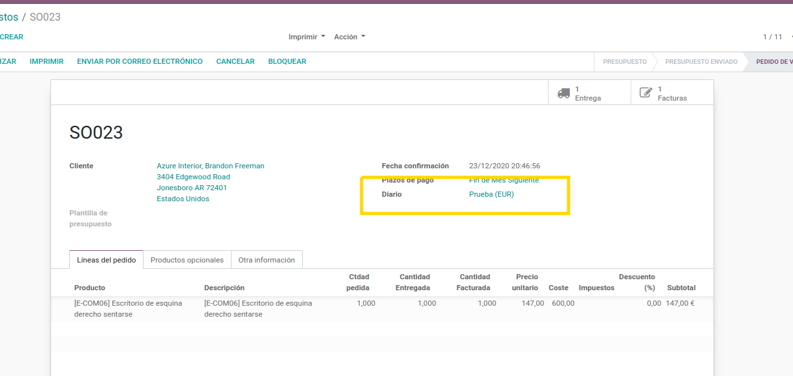

<section class="mt16 mb16" style="margin-top:16px">
    <div class="container" style="width:100%">
        <div class="row">
            <div class="col-md-12">
                <section class="oe_container" id="blm_header">
                    <div class="mt32 mb32">
                        <h2 class="text-center" style="color:#000">
                            Agregar Selecci&oacute;n de Diarios en Pedidos Presupuestos de Venta
                        </h2>
                    </div>
                    <h3 class="text-left" style="color:#000">
                        Odoo por defecto aplica un diario para ventas y no le permite al usuario seleccionar un diario
                        en espec&iacute;fico.
                        Instalando este m&oacute;dulo le permite al usuario seleccionar de forma obligatoria un diario
                        antes de crear la factura desde el pedido de venta.
                    </h3>
                    <div>
                         
                    </div>
                </section>
            </div>
        </div>
    </div>
</section>